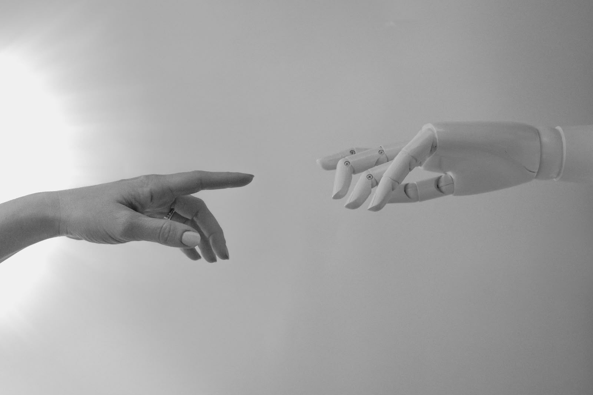

La Inteligencia Artificial ha generado importantes avances en diferentes áreas de la sociedad. Sin embargo, al igual que cualquier tecnología, presenta ventajas y desafíos que deben ser considerados para garantizar un uso responsable y beneficioso para las personas.
La IA permite realizar actividades repetitivas de manera rápida y eficiente, reduciendo el tiempo de trabajo y aumentando la productividad en empresas e industrias.
Los sistemas inteligentes ayudan a detectar enfermedades, analizar estudios médicos y desarrollar nuevos tratamientos, contribuyendo a mejorar la atención de los pacientes.
Las máquinas pueden procesar grandes cantidades de información con un alto nivel de exactitud, disminuyendo los errores humanos en diferentes procesos.
La IA permite adaptar los contenidos educativos a las necesidades de cada estudiante, favoreciendo un aprendizaje más eficiente.
La Inteligencia Artificial impulsa la investigación y facilita la creación de nuevas tecnologías que benefician a la sociedad.
Se utiliza para detectar fraudes, prevenir ataques informáticos y mejorar los sistemas de vigilancia y protección.
La automatización de procesos puede provocar que algunos trabajos tradicionales sean reemplazados por máquinas y sistemas inteligentes.
Muchas aplicaciones recopilan datos personales, lo que puede generar preocupaciones relacionadas con la protección de la información de los usuarios.
El uso excesivo de la tecnología puede hacer que las personas dependan cada vez más de los sistemas automatizados.
La IA puede ser utilizada para crear contenido engañoso o noticias falsas que afecten a la sociedad.
Los delincuentes también pueden aprovechar la Inteligencia Artificial para desarrollar ataques informáticos más sofisticados.
Existen debates sobre quién debe ser responsable de las decisiones tomadas por los sistemas inteligentes y cómo garantizar que estas tecnologías se utilicen de manera justa.
Por esta razón, es importante promover un desarrollo responsable de la Inteligencia Artificial, aprovechando sus beneficios y minimizando los posibles riesgos para la sociedad.